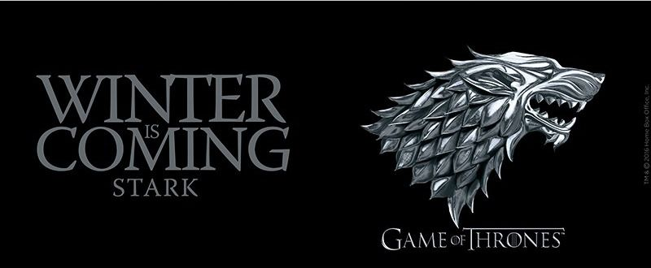

| No. overall |
No. in season |
Title | Directed by | Written By | Original air date | U.S. viewers (millions) |
|---|---|---|---|---|---|---|
| 1 | 1 | Winter is Coming | Tim Van Patten | David Benioff & D. B. Weiss | April 17,2011 | 2.22[20] |
| 2 | 2 | "The Kingsroad" | Tim Van Patten | David Benioff & D. B. Weiss | April 24, 2011 | 2.20[21] |
| 3 | 3 | "Lord Snow" | Brian Kirk | David Benioff & D. B. Weiss | May 1, 2011 | 2.44[22] |
| 4 | 4 | "Cripples, Bastards, and Broken Things" | Brian Kirk | Bryan Cogman | May 8, 2011 | 2.45[23] |
| 5 | 5 | "The Wolf and the Lion" | Brian Kirk | David Benioff & D. B. Weiss | May 15, 2011 | 2.58[24] |
| 6 | 6 | "A Golden Crown" | Daniel Minahan | Story by: David Benioff & D. B. Weiss
Teleplay by: Jane Espenson and David Benioff & D. B. Weiss |
May 22, 2011 | 2.44[25] |
| 7 | 7 | "You Win or You Die" | Daniel Minahan | David Benioff & D. B. Weiss | May 29, 2011 | 2.40[26] |
| 8 | 8 | "The Pointy End" | Daniel Minahan | George R. R. Martin | June 5, 2011 | 2.72[27] |
| 9 | 9 | "Baelor" | Alan Taylor | David Benioff & D. B. Weiss | June 12, 2011 | 2.66[28] |
| 10 | 10 | "Fire and Blood" | Alan Taylor | David Benioff & D. B. Weiss | June 19, 2011 | 3.04[29] |
|  | ||||||
| Winnipeg | ||||||